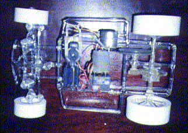

Na počátku byla snaha vyzkoušet nové konstrukční prvky a možnosti. Proto jsem se rozhodl, jako prototyp, nejdříve udělat auto na pohon elektromotorem. Na něm jsem si chtěl ověřit výrobu kulových čepů, skleněných pružin, kardanu (kvůli nutnému zalomení hřídele řízení) a diferenciálu. O výrobě diferenciálu se okrajově zmiňuji v části Mé sklářské začátky.


K ovládání jsem použil dvoukanálovou soupravu. Pro tlumení nárazů jsem si pneumatiky odlil z kaučuku. Auto na nich dosáhlo bez problému rychlosti asi 15 km/h.
Přední náprava

Jako vzor jsem použil konstrukci modelu Buggy. Výroba nebyla ani moc složitá, protože jsem jenom kopíroval a mírně se přizpůsoboval originálu. První složitější věc byla výroba pružin. Zkoušel jsem je vinout z různě silných tyčinek na různé grafitové trny. Požadavkem bylo, aby měly dostatečnou pružnost a aby bez prasknutí šly stlačit o cca 15 mm. (V praxi jsem počítal se zdvihem 10 mm, tak aby byla spolehlivá rezerva.) No, navinul jsem jich asi 50, než jsem našel optimální poměr mezi průměrem tyčinky, průměrem trnu a schopností přežít těch 15 mm stlačení. Celkový zdvih na konci ramen je pak asi 20 mm a natáčení kol asi 40° na každou stranu.
Jak funguje přední náprava otevřít na YouTube
Zadní náprava

Tak to již byl větší oříšek. Původně jsem ani diferenciál dělat nechtěl, ale pak mi došlo, že budu muset tak jak tak udělat převodovku, čili vyrábět ozubená kola ze skla, a tak proč nevyrobit rovnou k tomu ten diferenciál. Nemá cenu zde popisovat ty desítky hodin pokusů a omylů, vylomených zubů (naštěstí jen těch skleněných) a nových začátků. Nakonec se dílo podařilo.
Zadní náprava s diferenciálem otevřít na YouTube
A pak již jen zbývalo to všechno spasovat dohromady, zabrousit, co se vzájemně pohybuje, nabít baterky a vyjet. Tím byla hotova první část mé představy.
Na páru
Tou druhou bylo nahradit elektromotor parním strojem. K tomu jsem použil již spolehlivou konstrukci válce a šoupěte z předcházejících modelů. Dále jsem dodělal topeniště a mohlo se vyrazit.

Jízda parního auta otevřít na YouTube